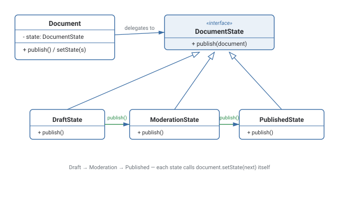

State Pattern
Lets an object appear to change its class at runtime, by delegating state-dependent behavior to a swappable State object rather than branching on a status field.
Theory
The problem, in plain terms
You're building a document publishing workflow. A document starts as a Draft, moves to Moderation once someone submits it for review, and finally becomes Published. Calling publish() should behave completely differently depending on which of these states the document is currently in — from Draft it should move to Moderation; from Moderation, only a moderator should be able to actually publish it; from Published, calling publish() again should do nothing. The naive approach is a status field checked by a wall of if (status == "draft") ... else if (status == "moderation") ... inside every method that behaves differently per state — and that wall grows and gets duplicated across every method as more states and behaviors are added.
State pulls each state's behavior into its own class implementing a common interface, and the Document (the Context) simply delegates to whichever state object is currently active. Calling document.publish() just calls currentState.publish(document) — the Document doesn't need to know what "draft" or "moderation" actually implies; each state class encodes its own rules and even decides what the next state should be.
How it's built
A State interface declares the operations that vary by state (publish(), render(), etc). Concrete states (DraftState, ModerationState, PublishedState) implement these operations according to their own rules, and — critically — often call context.setState(nextState) themselves as part of handling a request, meaning states actively drive their own transitions. The Context (Document) holds a reference to the current state object and delegates all state-dependent behavior to it, exposing setState() for states (or external code) to trigger a transition.
Document the full set of valid transitions somewhere central (a diagram or comment) even though the transition logic itself lives scattered across state classes — future readers need a map of the whole machine.
Reintroducing a status-flag check somewhere else in the codebase alongside the State objects — now there are two sources of truth for "what state is this in," which will eventually disagree.
Where it bites you
If transitions between states are scattered across many state classes with no central picture of the state machine, it can get hard to see or verify the full set of valid transitions just by reading the code — a state diagram (or comment mapping the full transition table) becomes important documentation alongside the code itself. Also, for a genuinely small number of states with simple, static rules, a plain enum plus a switch statement can be perfectly readable and the State pattern's extra classes are unnecessary ceremony.
Diagram

When to Use
- An object's behavior genuinely changes based on its internal state, and multiple methods each have their own per-state branching logic.
- The set of states and transitions is non-trivial and expected to grow, making a scattered per-method conditional approach hard to maintain.
- States themselves should decide the next valid transition, rather than external code managing a status field.
- There are only two or three states with trivial, unlikely-to-change behavior differences — a simple enum and conditional is more direct.
- Transitions need to be centrally, explicitly validated/audited from one place — a table-driven state machine may give clearer visibility.
What interviewers are actually listening for: recognizing that State's essence is letting an object appear to change its class at runtime — the Context's behavior changes entirely just by swapping which State object it delegates to, with no change to the Context's own code. Also, clearly distinguishing State from Strategy despite the near-identical class structure: State variants actively trigger transitions to other states as part of their own logic, while Strategy variants are typically chosen once and don't know about each other.
Real-World Examples
- Document/content workflows — Draft → In Review → Published, where allowed actions differ at each stage.
- Order lifecycle in e-commerce — Placed → Shipped → Delivered → Returned, each with different valid operations.
- Media player controls — Playing, Paused, and Stopped states each interpret the same "press play" button press differently.
- TCP connection state machine — Closed, Listen, SYN-Sent, Established, and so on, each handling incoming packets differently.
- Traffic light controllers — Red, Yellow, Green states each defining their own duration and next-state transition.
Interview Questions
Click a question to reveal the answer.
What does it mean that State lets an object "appear to change its class at runtime"?
The Context's behavior for a given method call can change completely just by swapping which State object it currently delegates to — from the outside, calling the same method produces entirely different behavior depending on the active state, as if the Context itself had become a different class, even though the Context's own code never changed.
Who decides the next state — the Context or the State objects?
Typically the State objects themselves. A concrete state's method implementation both performs its state-specific logic and calls context.setState(nextState) to move the Context into the next state, meaning the transition logic is distributed across the state classes rather than centralized in the Context.
How is State different from Strategy, given both have a Context holding a reference to an interface implementation?
Structurally similar, but by intent: Strategy variants are usually selected once (or explicitly swapped in by client code) and don't know about or trigger each other. State variants represent a Context's internal condition and actively drive transitions to other states as part of handling requests — the states know about and cause movement between each other, which Strategy implementations typically don't do.
When would you avoid the State pattern in favor of a simple enum + switch?
When there are only a couple of states with simple, stable, unlikely-to-grow behavior differences — the overhead of a full class per state buys you little, and a straightforward conditional on an enum value is easier for a new reader to scan in one place.
Code & Output
Same pattern, four languages. Every output shown here was captured from a real run — note publish() called a fourth time on an already-Published document does nothing further.